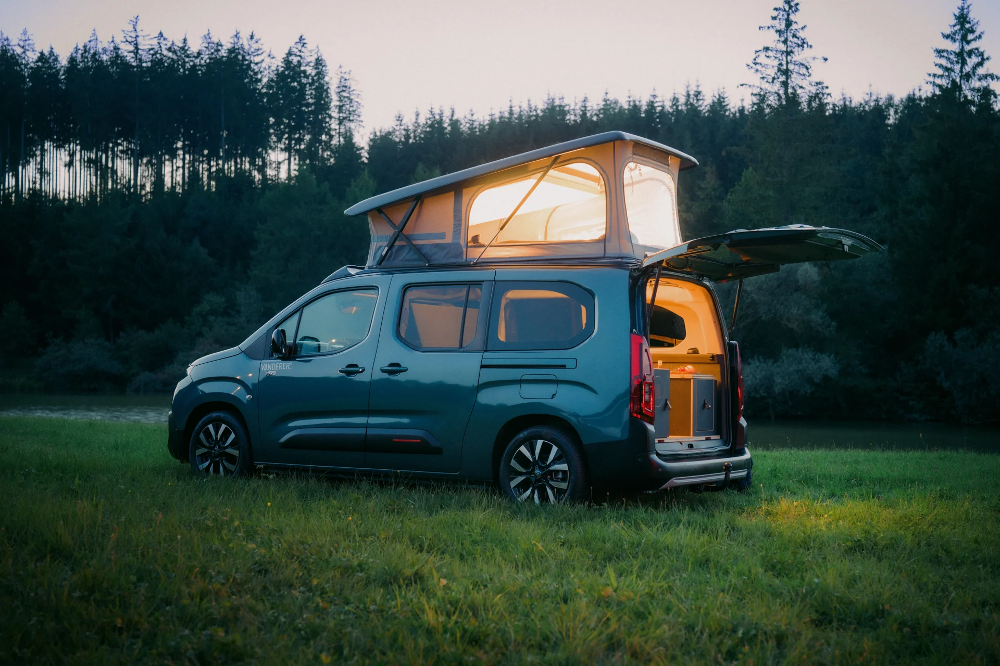

Mit serienmäßigem Schlafdach
VANDERER One
Das Aufstelldach schafft zusätzlichen Raum zum Stehen, Sitzen und Schlafen. Unten entscheiden Sie selbst, wie Sie Ihren Camper nutzen möchten.
- Komfortbett im Dach mit Unterfedersystem
- Livingroom oder Sleep & Storage optional wählbar
- Auch ohne Möbelmodul erhältlich